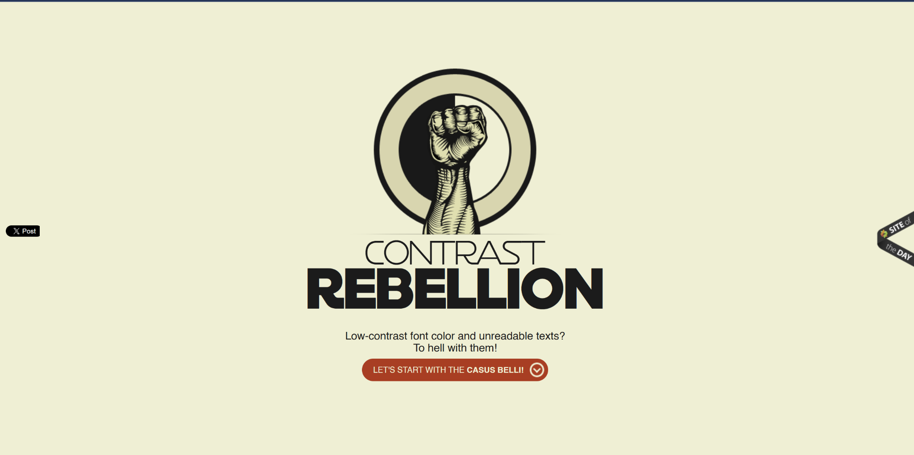
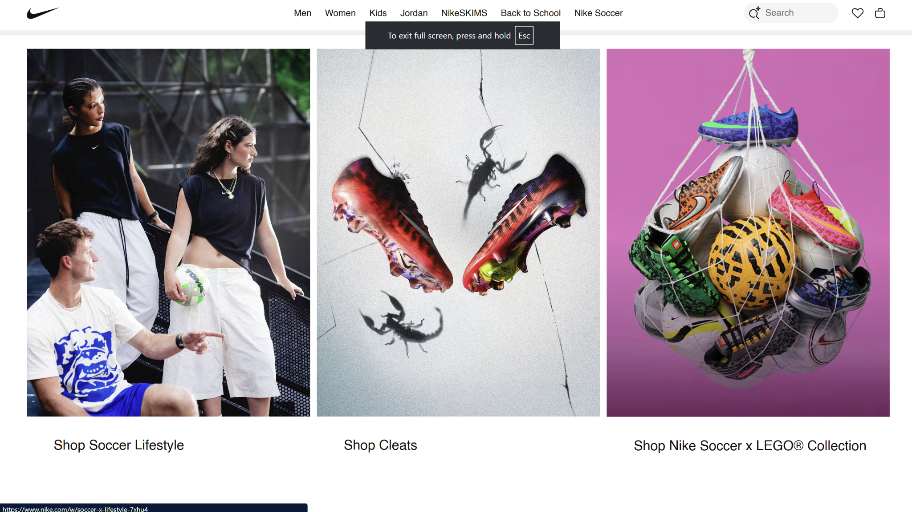
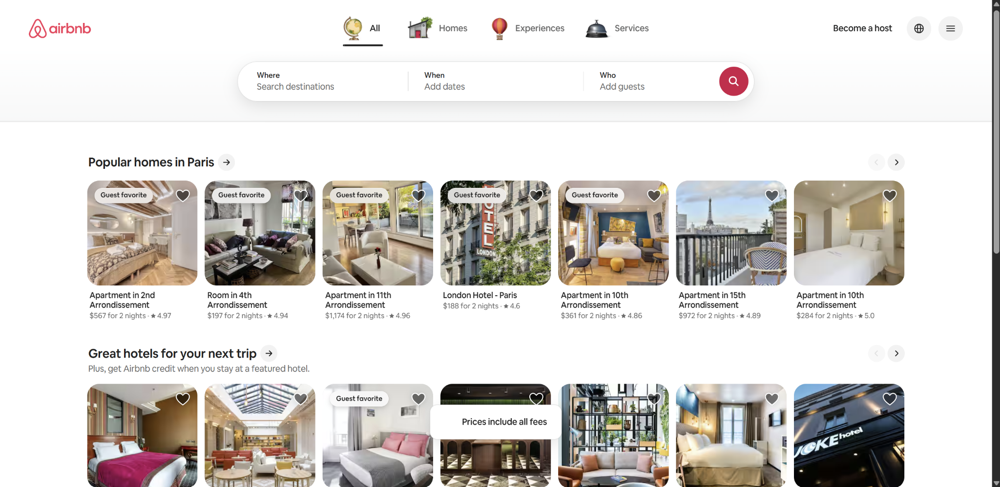

Four Principles of Web Design
This page shows examples of contrast, repetition, alignment, and proximity
on four different websites.
Contrast
Contrast Rebellion
- The black text is easy to see against the light background.
- The word REBELLION is much larger and bolder than the other text.
- The orange button stands out from the black and cream colors.

Repetition
Nike
- Nike repeats the same image and text layout for each category.
- The pictures have similar sizes and spacing.
- The repeated layout makes the page feel organized.

Alignment
Tori
- Text
- The headings and paragraphs line up along the same edges.
- Columns
- The page places information into clear columns.
- Boxes
- The boxes and sections follow the same grid.
Proximity
Airbnb
- Each property picture is close to its name, price, and rating.
- Related listings are grouped under the same heading.
- Extra space separates one group of listings from another.

Conclusion
Contrast makes important parts stand out. Repetition creates consistency.
Alignment keeps the page organized, and proximity shows which items belong together.